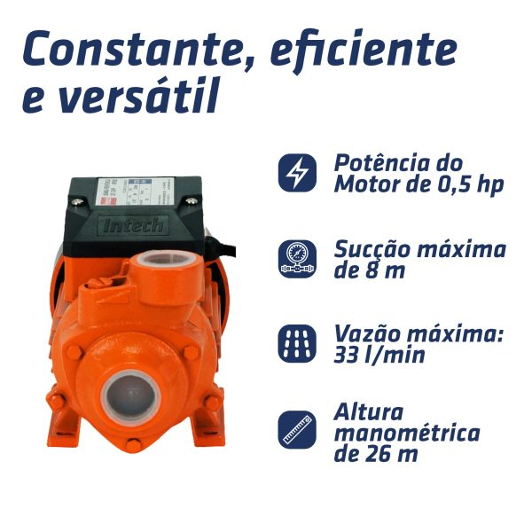
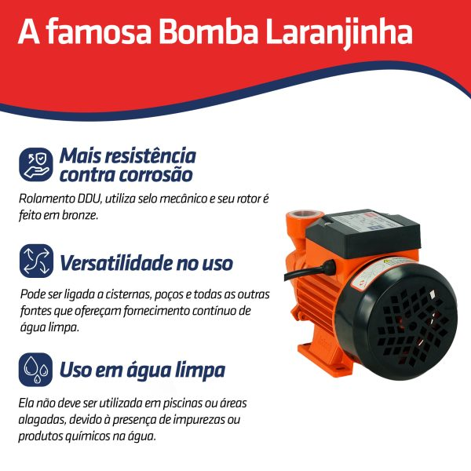
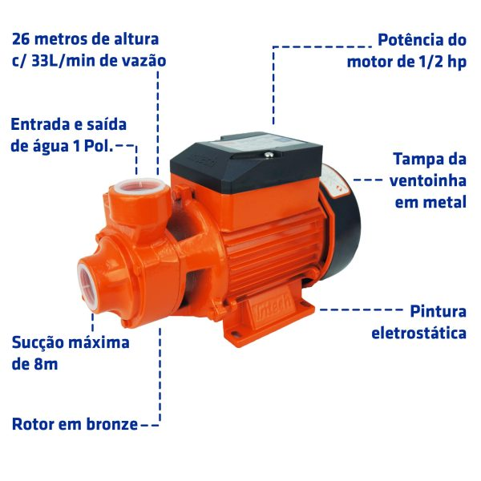
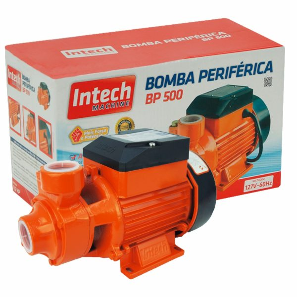

Vista Explodida › Bombas D'água › Bomba d'água periférica BP500
Carregando modelo 3D…
Arraste para girar · role para zoom · clique numa peça
Bomba d'água periférica BP500
½ HP · 33 l/min · Vista explodida interativa com 38 posições
½ HP potência33 l/min vazão26 m alt. manométrica8 m sucção





Selecione uma peça
Clique em uma peça no modelo 3D ou na tabela de componentes para ver o nome, a posição e o código de reposição.
| Pos. | Descrição | Código(s) | Grupo |
|---|
A Bomba Periférica BP500 é indicada para transferência de água limpa de poços e cisternas para residências, pequenos edifícios (até 2 andares), pequenas irrigações e pequenas indústrias. Também pode ser usada para transferência de água limpa em praias e áreas rurais.
- Sucção máxima de 8 metros
- Vazão máxima de 1.980 litros por hora
- Rolamento DDU e selo mecânico
- Corpo e tampa em ferro fundido
- Rotor em latão
- Fácil instalação
Não indicada para ligação direta à rede pública (que contém ar) — para isso, use os modelos autoescorvantes BPA500 e BPA1000. Use somente com água limpa; não indicada para piscinas ou áreas alagadas.
- 1 Bomba Periférica BP500
- 1 Manual do Usuário